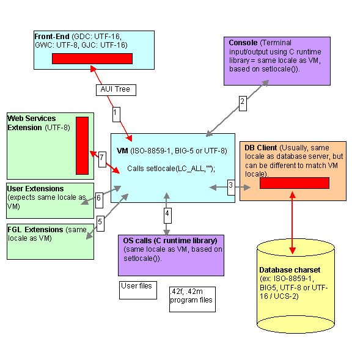

Summary:
See also: Localized Strings
Localization support allows you to write BDL programs that follow a specific language and cultural rules. This includes single and multi-byte character set support, language-specific messages, as well as lexical/numeric/currency conventions.
Beside the support of a locale specification described in this page, the internationalization (I18N) of an application consist to extract and centralize all strings of the sources that are subject of translation. Genero BDL helps you in this task with the Localized Strings feature.
The locale defines the language (for messages), country/territory (for currency symbols, date formats) and code set (character set encoding). A BDL program needs to be able to determine its locale and act accordingly, to be portable to different languages and character sets.
Warning: Since character set conversions can be symmetrical (the same code point can represent different characters in different character sets), an invalid locale configuration in one of the components can result in invalid characters in the database. Read carefully the sections "Locale and character set basics" and "Understand locale settings". For example, a client application is configured to display glyphs (font) for CP437. If the application gets a 0x82 (130) code point, it displays an é character. Now imagine that the DB client is configured with character set CP1252. In this character set, the cope point 0x82 is actually a curved quote. As a result, if you insert the é char (0x82 in CP437) in the database, it will actually be seen as curved quote (0x82 in CP1252) by the database server. When fetching that curved quote back to the client, the database server returns the 0x82 code point, which displays correctly as é on the CP437 client - so you think everything is ok. But if you query the database with another application, configured properly with CP1252 and DB client codeset, you don't see the é, you see a curved quote.
Below is a quick step-by-step guide to configure your Genero application properly. We still highly recommend that you read the rest of the page for more information:
Before starting with application/database design, configuration and settings, you must know some basics concerning language and character sets on computers. In this section, we attempt to describe these basics, but we strongly recommend you to carefully read the operating system and database server manuals covering localization or character set handling. You can also find a lot of information about character sets and character encoding on the internet.
If you don't know what you are doing with character sets, the end user might get strange characters displayed on the screen, and will probably not be able to input non-ASCII characters. In the worst case, as character set conversion can be symmetric for single-byte character sets, the end user might see correct characters on the workstation, but on the back-end you can get invalid characters in the database files. By upgrading to a newer OS, Genero BDL runtime or database system, or if a character set mapping utility was used somewhere in the chain, you can even get mixed character encoding in the database files.
In computers, a character is the unit of information corresponding to a symbol of a natural language. This can be a letter, a digit, a punctuation mark, a mathematic or even musical symbol. To represent a character in memory or in a file, computers must encode the character in a specific numeric value called code point. This code point uniquely identifies a character in a given character set. Mapping a character to a code point is called character encoding. The same code point might represent a different character in several character sets. The glyph is the graphical representation of the character. In other words, it's the way the character is drawn on the screen or on a printer. Computers implement the glyph of characters with fonts, by mapping a code point to a bitmap image or drawing instructions based on math formulas or vector graphics.
ASCII stands for the American Standard Code for Information Interchange. ASCII is a well-known character encoding based on the English alphabet. Characters are encoded in a single byte, using the 7 lower bits only. Up to 127 characters, printable and not printable (like control characters), are defined in ASCII. Nearly all other character sets (using 8 bits or multiple bytes) define the first 127 characters as the ASCII character set. Aliases for ASCII include ISO646-US, ANSI_X3.4-1968, IBM367, cp367, and more.
A single-byte character set defines the encoding for characters on a unique
byte. The size of a character is always one byte.
Example of single-byte character sets include ISO-8859-1, MS code page CP1252.
Genero BDL supports single-byte character sets.
A double-byte character set defines the encoding for characters on two bytes.
The size of a character is always two bytes.
Example of double-byte character sets include UCS-2, used by SQL Server in NCHAR and
NVARCHAR columns. Note that UTF-16 is not a (fixed) double-byte character set:
You can have characters encoded on 2 or 4 bytes. UCS-2 is actually a sub-set of
UTF-16.
Warning: Genero BDL does not support double-byte character sets.
A multi-byte character set defines the encoding for characters on a variable
number of bytes. The size of a character can be one (usually ASCII chars), two,
three or more bytes, depending on the character set.
Example of multi-byte character sets are BIG5, EUC-JP, and UTF-8. BIG5 and EUC-JP
characters can be one or two bytes long, while UTF-8 characters can be 1, 2, 3
or 4 bytes long (usually a maximum of 3 is sufficient).
Genero BDL supports multi-byte character sets.
UNICODE is a standard specification to map all possible characters to a numeric value, in order to cover all possible languages in a unique character set. UNICODE defines the mapping of characters to integer codes, but it does not define the exact implementation (i.e. encoding) for a character. Several character sets are based on the UNICODE standard, such as UTF-7, UTF-8, UTF-16, UTF-32, UCS-2, and UCS-4. Each of these character sets use a different encoding method. For example, with UTF-8, the letter Æ is encoded with two bytes as 0xC3 and 0xB6, while the same character will be encoded 0x00C6 with UTF-16.
Tip: On a Windows and Linux systems, you can see the UNICODE value for characters of a given font by running the "Character Map" utility.
Warning: When Microsoft Windows users talk about UNICODE, they typically mean UCS-2 or UTF-16, while Unix users typically mean UTF-8.
With internationalization, people want to use different languages within the same application; for example, to have Chinese, Japanese, English, French and German addresses of customers in their database. UNICODE is a character encoding specification that defines characters for all languages. More and more databases will use a UNICODE character set on the database server, because it "standardizes" all data from different client applications. If needed, the client application can then use a different character set like ISO-8859-1 or BIG5: The database software takes care of character set conversions. However, if the end user needs to deal with different languages, all components of the system (from database back-end to GUI front-end) must work in UNICODE.
At this time, UNICODE tends to be the standard, but unfortunately not all platforms/systems use the same UNICODE character set. Recent UNIX distributions define UTF-8 as the default character set locale, XML files are UTF-8 by default, while Microsoft Windows standard is UTF-16 (NTFS) / UCS-2 (SQL Server).
On a UNIX box, you have the LANG / LC_ALL environment variables to define the locale. Each process / terminal can set its own locale. By default this is en_US.utf8 on recent UNIX systems. You can query for available locales with the locale -a command. Some systems come with only a few locales installed, you must then install an additional package to get more languages. You must also define the correct character set in the terminal (xterm or gnome-term), otherwise non-ASCII characters will not display properly.
On Windows platforms, for non-UNICODE (i.e. non-UTF-16/UCS-2) applications, you have ACP and OEMCP code pages. ACP stands for ANSI Code Page and were designed by Microsoft for first GUI applications, while OEMCP defines old code pages for MS/DOS console applications. You can select the default ACP/OEMCP code pages for non-UNICODE application in the language and regional settings panel of Windows (make sure you define the settings for non-UNICODE applications, this is done in the "Advanced" panel on Windows XP). Code page can be changed in each console window with the chcp command. Note that with Genero, you can use the LANG environment variable on Windows to define the character set to be used by BDL.
It is critical to understand how the different components of a BDL process handle locale settings. Each component (i.e. runtime system, database client software, front-end, terminal) has to be configured properly to get the correct character set conversions through the whole chain. The chain starts on the end-user workstation with front-end windows and ends in the database storage files.
The schema below shows the different components of a BDL process.

The typical mistake is to forget to set the database client software locale. Most database servers can't detect that the locale of the db client is invalid and don't raise any error. A character string is just a set of bytes; The same code might represent different characters in different code sets. For example, the Latin letter é with acute (UNICODE: U+00E9) will be encoded as 0xE9/233 in CP1252 but will get the code 0x82/130 in CP437. The codes 233 or 130 are valid characters in both code sets, so if the database uses CP1252, 233 will represent an é and 130 will represent a curved quote. If the client application used CP437, the é will be encoded as 130, stored as curved quotes but are retrieved from the database as is and displayed back as é in the CP437 code page. From the front-end side, you can't see that the character in the database in wrong.
Warning: On recent UNIX systems, the default locale is set to UTF-8. If your application has been developed on an older system, it is probably using a single-byte character set like ISO-8859-1 or CP1252, and program need to be executed in this locale, not in the UTF-8 locale.
It is important to define / know what is the database server character set (i.e. in what code set the characters are stored in the database).
The best way to test if the characters inserted in the database are correct is to use the database vendor SQL interpreter and select rows inserted from a BDL program. The rows most hold non-ASCII data to check if the code of the characters is correct. Some databases support the ASCII() or better, the UNICODE() SQL function to check the code of a character. Use such function to determine the value of a character in the database field. If the character code does not correspond to the expected value in the character set of the database server, there is a configuration mistake somewhere.
Warning: If you run a BDL application in TUI mode (or a batch program doing DISPLAYs), you must properly configure the code set in the terminal window (X11 xterm, Windows CMD, putty, etc). If the terminal code set does not match the runtime system locale, you will get invalid characters displayed on the screen. On Windows platforms, the OEM code page of the CMD window can be queried/changed with the chcp command. On a Gnome terminal, go to the menu "Terminal" - "Set Character Encoding".
This section describes the settings defining the locale, changing the behavior of the compilers and runtime system.
The Genero BDL compilers and runtime system use the standard C library functions (setlocale) to handle character sets. The LANG (or LC_ALL) environment variable defines the global settings for the language used by the application. The locale settings matters at compile time and at runtime. At runtime, the LANG variable changes the behavior of the character handling functions, such as UPSHIFT, DOWNSHIFT. It also changes the handling of the character strings, which can be single byte or multi-byte encoded. Note that an invalid locale setting will cause compilation errors if the .4gl or .per source file contains characters that do not exist in the encoding defined by the LANG variable.
Warning: On Windows platforms, if you don't specify the LANG environment variable, the language and character set defaults to the system locale which is defined by the regional settings for non-Unicode applications. For example, on a US-English Windows, this defaults to the 1252 code page. You typically leave the default on Windows platforms (i.e. you should not set the LANG variable, except if your application uses a different character set as the Windows system locale). On UNIX platforms, you should always define LANG or LC_ALL.
With the LANG environment variable (or LC_ALL, on UNIX), you define the language, the territory (aka country) and the codeset (aka character set or code page) to be used. The format of the value is normalized as follows, but may be specific on some operating systems:
language_territory.codeset
For example:
$ LANG=en_US.iso88591; export LANG
Warning: Usually OS vendors define a specific set of values for the language, territory and codeset. For example, on a UNIX platform, you typically have the value "en_US.ISO8859-1" for a US English locale, while Microsoft Windows requires the "English_USA.1252" value. For more details about supported locales, please refer to the OS documentation. On UNIX platforms, you can do a man locale or man setlocale to understand how the standard C library defines locale settings. For Windows, search in the MSDN library.
Note that on Windows platforms, the syntax of the LANG variable is:
language[_territory[.codeset]]
| .codeset
For example:
C:\ set LANG=English_USA.1252
A list of available locales can be found on UNIX platform by running the locale -a command. You may also want to read the man pages of the locale command and the setlocale function. On Windows platforms, search the MSDN documentation for "Language and Country/Region Strings".
See also Troubleshooting to learn how to check if a locale is properly set, and list the locales installed on your system.
To perform decimal to/from string conversions, the runtime system uses the DBMONEY or DBFORMAT environment variables. These variables define hundreds / decimal separators and currency symbols for MONEY data types.
Note that the standard C library environment variables LC_MONETARY and LC_NUMERIC are ignored.
To perform date to/from string conversions, the runtime system uses by default the DBDATE environment variable.
When using the FORMAT field attribute or the USING operator to format dates with abbreviated day and month names - by using ddd / mmm markers - the system uses English-language based texts for the conversion. This means, day (ddd) and month (mmm) abbreviations are not localized according to the locale settings, they will always be in English.
Note that the standard C library environment variable LC_TIME is ignored.
When writing a form or program source file, you use a specific character set. This character set depends upon the text editor or operating system settings you are using on the development platform. For example, when writing a string constant in a 4gl module, containing Arabic characters, you probably use the ISO-8859-6 character set. The character set used at runtime (during program execution) must match the character set used to write programs.
At runtime, a Genero program can only work in a specific character set. However, by using Localized Strings, you can start multiple instances of the same compiled program using different locales. For a given program instance the character set used by the strings resource files must correspond to the locale. Make sure the string identifiers use ASCII only.
Genero BDL uses byte length semantics: When defining a character data type like CHAR(n) or VARCHAR(n), n represents as a number of bytes, not a number of characters. In a single-byte character set like ISO-8859-1, any character is encoded on a unique byte, so the number of bytes equals the number of characters. But in a multi-byte character set, encoding requires more that one byte, so the number of bytes to store a multi-byte string is bigger as the number of characters. For example, in a BIG5 encoding, one Chinese character needs 2 bytes, so if you want to hold a BIG5 string with a maximum of 10 Chinese characters, you must define a CHAR(20). When using a variable-length encoding like UTF-8, characters can take one, two or more bytes, so you need to choose the right average to define CHAR or VARCHAR variables.
The definition and length semantics of character data types such as CHAR, VARCHAR, NCHAR and NVARCHAR varies from one database vendor to another. Some use byte length semantics, other use character length semantics, and other support both ways. For example, Informix uses byte length semantics only while with Oracle you can define character columns with a number of bytes "CHAR(10 BYTE)" or a number of characters "CHAR(10 CHAR)". SQL Server supports non-UCS-2 character sets (Latin1, BIG5) in CHAR/VARCHAR/TEXT columns, using a byte length for the size, while NCHAR/NVARCHAR/NTEXT columns store double-byte UCS-2 characters and use char length semantics.
Next table shows the character data type length semantics of database servers supported by Genero:
| Database Engine | Length semantics in character data types | Summary |
| Genero db | Uses Byte Length Semantics for the size
of character columns. Data is stored in UTF-8 when CHARACTER_SET=UTF-8 configuration parameter is defined. |
BLS |
| Oracle | Supports both Byte or Character Length Semantics
in character type definition, can be defined
globally for the database or at column level. Data is stored in database character set for CHAR/VARCHAR columns and in national character set for NCHAR/NVARCHAR columns. |
BLS/CLS |
| Informix | Uses Byte Length Semantics for the size
of character columns. Data is stored in the database character set defined by DB_LOCALE. |
BLS |
| IBM DB2 | Uses Byte Length Semantics for the size
of character columns. Data is stored in the database character set defined by the CODESET of CREATE DATABASE. |
BLS |
| Microsoft SQL Server | CHAR/ VARCHAR sizes are specified in
bytes; Data is stored in the character set defined by the database
collation. NCHAR/ NVARCHAR sizes are specified in characters; Data is stored in UCS-2. See ODI Adaptation Guide for more details. |
BLS/CLS |
| PostgreSQL | Uses Character Length Semantics for the
size of character columns. Data is stored in the database character set defined by WITH ENCODING of CREATE DATABASE. |
CLS |
| MySQL | Uses Character Length Semantics for the
size of character columns. Data is stored in the server character set defined by a configuration parameter. |
CLS |
| Sybase Adaptive Server Enterprise (ASE) |
CHAR/ VARCHAR sizes are specified in bytes; Data is stored in the db character
set. NCHAR/NVARCHAR sizes are specified in characters; Data is stored the db character set. UNICHAR/UNIVARCHAR sizes are specified in characters; Data is stored in UTF-16. See ODI Adaptation Guide for more details. |
BLS/CLS |
| Sybase Adaptive Server Anywhere (ASA) | CHAR/ VARCHAR sizes are can be specified in
bytes by default, unless you add the CHAR[ACTER] keyword as part of the
length; Data is stored in db character set. NCHAR/ NVARCHAR sizes are specified in characters; Data is stored in UTF-8. |
BLS/CLS |
Other SQL elements like functions and operators are affected by the length semantic. For example, Informix LENGTH() function always returns a number of bytes, while Oracle's LENGTH() function returns a number of characters (use LENGTHB() to get the number of bytes with Oracle).
It is important to understand properly how the database servers handle multi-byte character sets. Check your database server reference manual: In most documentations you will find a "Localization" chapter which describes those concepts in detail.
For portability, we recommend to use byte length semantic based character data types in databases, because this corresponds to the length semantics used by Genero BDL (this is important when declaring variables by using DEFINE LIKE, which is based on database schemas).
Since Genero BDL is using Byte Length Semantics, all character positions in strings are actually byte positions. In a multi-byte environment, if you don't pay attention to this, you can end up with invalid characters in strings. For example if you use the sub-script operator [x,y], you might point to the second or third byte of a multi-byte character, while you should always use byte positions of the first byte of a character.
This section describes the settings defining the locale for the database client. Each database software has its own client character set configuration.
Warning: You must properly configure the database client locale in order to send/receive data to the database server, according to the locale used by your application. Both database client locale and application locale settings must match (you cannot have a database client locale in Japanese and a runtime locale in Chinese).
Here is the list of environment variables defining the locale used by the application, for each supported database client:
| Database Client | Settings |
| Genero db | The character set used by the client is defined by the characterset
ODBC DSN configuration parameter. If this parameter is not set, it defaults to ASCII. Before version 3.80, the character set was defined by the ANTS_CHARSET environment variable. |
| Oracle | The client locale settings can be set with environment variables like NLS_LANG, or after connection, with the ALTER SESSION instruction. By default, the client locale is set from the database server locale. |
| Informix | The client locale is defined by the CLIENT_LOCALE environment variable. For backward compatibility, if CLIENT_LOCALE is not defined, other settings are used if defined (DBDATE / DBTIME / GL_DATE / GL_DATETIME, as well as standard LC_* variables). |
| IBM DB2 | The client locale is defined by the DB2CODEPAGE profile variable. You must set this variable with the db2set command. If DB2CODEPAGE is not set, DB2 uses the operating system code page on Windows and the LANG environment variable on Unix. |
| Microsoft SQL Server | For MSV and SNC drivers on Windows platforms, the database client locale is defined by the language settings for non-Unicode applications. The current ANSI code page (ACP) is used by the SQL Server client and the Genero runtime system. |
| When using the FTM (FreeTDS) driver, the client character set is defined by the client charset parameter in freetds.conf or with the ClientCharset parameter in the DSN of the odbc.ini file. | |
| When using the ESM (EasySoft) driver, the client character set is defined by the Client_CSet parameter in the DSN of the odbc.ini file. When using CHAR/VARCHAR types in the database and when the database collation is different from the client locale, you must also set the Server_CSet parameter to an iconv name corresponding to the database collation. For example, if Client_CSet=BIG5 and the db collation is Chinese_Taiwan_Stroke_BIN, you must set Server_CSet=BIG5HKSCS, otherwise invalid data will be returned from the server. | |
| PostgreSQL | The client locale can be set with the PGCLIENTENCODING environment variable, with the client_encoding configuration parameter in postgresql.conf, or after connection, with the SET CLIENT_ENCODING instruction. Check the pg_conversion system table for available character set conversions. |
| MySQL | The client locale is defined by the default-character-set option in the configuration file, or after connection, with the SET NAMES and SET CHARACTER SET instructions. |
| Sybase Adaptive Server Enterprise (ASE) |
By default, the Sybase database client character set is defined by the operating system
locale where the database client runs. On Windows, it is the
ANSI code page of the login session (can be overwritten by setting the
LANG environment variable), on UNIX it is defined by the LC_CTYPE, LC_ALL or LANG environment variable. Note that you may need to edit the
$SYBASE/locales/locales.dat file to map the OS locale name to a known Sybase
character set. See Sybase ODBC documentation for more details regarding character set configuration. |
| Sybase Adaptive Server Anywhere (ASA) | The client locale is defined by the operating system locale where the database client is installed. |
See database vendor documentation for more details.
The host operating system on the front-end workstation must be able to handle the character set and fonts. For instance, a Western-European Windows is not configured to handle Arabic applications. If you start an Arabic application, some graphical problems may occur (for instance the title bar won't display Arabic characters, but unwanted characters instead).
The GUI front-end software must support the conversion of the runtime system character set to/from the character set used internally by the client, and must be configured with the correct font to display the characters used by the application. For example, the default font for a GDC installed on an English Windows system might not be able to display Japanese characters. You must the change the font in the GDC configuration panel. Refer to the front-end documentation to see how character set conversion and fonts can be configured.
When using a TUI program in a terminal emulator such as Putty, XTerm or even the Windows Console, make sure the terminal is configured properly to display the characters of the application locale. For example, on a Windows Console you can use the chcp command to change the current code page.
Predefined runtime system error messages are stored in the .iem system message files. The system message files use the same technique as user defined message files (See Message Files). The default message files are located in the FGLDIR/msg/en_US directory (.msg sources are provided).
For backward compatibility with Informix 4gl, some of these system error messages are used by the runtime system to report a "normal" error during a dialog instruction. For example, end users may get the error -1309 "There are no more rows in the direction you are going" when scrolling an a DISPLAY ARRAY list.
Here are some examples of system messages that can appear during a dialog:
| Number | Description |
| -1204 |
Invalid year in date. |
| -1304 |
Error in field. |
| -1305 |
This field requires an entered value. |
| -1306 |
Please type again for verification. |
| -1307 |
Cannot insert another row - the input array is full. |
| -1309 |
There are no more rows in the direction you are going. |
| and more... |
While it is recommended to use Localized Strings to internationalize application messages, you will need to translated some of the system messages to a specific locale and language, or you might just want to customize the English messages.
With this technique, you can deploy multiple message files in different languages and locales in the same FGLDIR/msg directory.
To use your own customized system messages, do the following:
The name of the codeset can be different from one system to another. The file $FGLDIR/etc/charmap.alias is used to provide the translation of the local name to a generic name. The generic name is the name sent to the front-end. It is the translated name that appears when the command 'fglrun -i mbcs' is used. The local codeset name is the value obtained using the system call 'nl_langinfo(CODESET)'. You can add more entries to the charmap.alias file according to the need.
An example of locale configuration on HP
$ export LANG=en_US.iso88591 $ locale LANG=en_US.iso88591 LC_CTYPE="en_US.iso88591" LC_COLLATE="en_US.iso88591" LC_MONETARY="en_US.iso88591" LC_NUMERIC="en_US.iso88591" LC_TIME="en_US.iso88591" LC_MESSAGES="en_US.iso88591" LC_ALL= $ locale charmap "iso88591.cm"
The charmap.alias file contains the following line:
iso88591 ISO8859-1
The name sent to the client is ISO-8859-1 instead of iso88591.
The following C program should compile, and outputs the current codeset name.
#include <stdio.h>
#include <stdlib.h>
#include <locale.h>
#include <langinfo.h>
int main()
{
setlocale(LC_ALL, "");
printf("%s\n", nl_langinfo(CODESET));
exit(0);
}
With the previous example this program outputs:
iso88591
The Ming Guo (or Minguo) calendar is still used in some Asian regions like Taiwan. This calendar is equivalent to the Gregorian calendar, except that the years are numbered with a different base: In the Ming Guo calendar, the first year (1) corresponds to the Gregorian year 1912, the year the Republic Of China was founded.
Digit-based year Ming Guo date format can be enabled by adding the C1 modifier at the end of the value set for the DBDATE environment variable:
$ DBDATE="Y3MD/C1" $ export DBDATE
With the above DBDATE setting, dates will be displayed with a year following the Ming Guo calendar, and date input will also be interpreted based on that calendar. For example, if the user enters 90/3/24, it is equivalent to an input of 2002/3/24 when using the Gregorian calendar. Basically, the runtime system will subtract 1912 or add 1912 respectively when displaying or reading date values).
When using the C1 modifier, the possible values for the Yn symbol are Y4, Y3, Y2.
The MDY() operator is sensitive to the C1 modifier usage in DBDATE. For example, if DBDATE=Y3MD/C1, MDY(3,24,1) will build a date the corresponds in the Gregorian to MDY(3,24,1912).
The USING operator supports the c1 modifier as well. The c1 modifier must be specified at the end of the format. You can for example use the following format string: "yyyy-mm-ddc1".
The C2 modifier to use Era names is not supported.
Unlike Informix 4gl, when using negative years, the minus sign is placed over the left-most zero of the year, to avoid miss-aligned dates.
For example, if DBDATE=Y3MD/C1:
MDY(3,2, 1) USING "yyy/mm/ddc1" MDY(3,2,-1) USING "yyy/mm/ddc1"
will align properly as follows:
0001/03/02 -001/03/02
Warning: Front-ends may not support the Ming Guo calendar for widgets like DATEEDIT.
On Microsoft Windows XP / 2000 platforms, some system updates (Services Pack 2) or Office versions do set the LANG environment variable with a value for Microsoft applications (for example 1033). Such value is not recognized by Genero as a valid locale specification. Make sure that the LANG environment variable is properly set in the context of Genero applications.
You may have different codesets on the client workstation and the application server. The typical mistake that can happen is the following: You have edited a form-file with the encoding CP1253; you compile this form-file on a UNIX-server (encoding ISO-8859-7). When displaying the form, invalid characters will appear. This is usually the case when you write your source file under a Windows system (that uses Microsoft Code Page encodings), and use a Linux server (that uses ISO codepages).
Warning: All source files must be created/edited in the encoding of the server (where fglcomp and fglrun will be executed).
On Unix systems, the locale command without parameters outputs information about the current locale environment.
Once the LANG environment variable is set, check that the locale environment is correct:
$ export LANG=en_US.ISO8859-1 $ locale LANG=en_US.ISO8859-1 LC_CTYPE="en_US.ISO8859-1" LC_NUMERIC="en_US.ISO8859-1" LC_TIME="en_US.ISO8859-1" LC_COLLATE="en_US.ISO8859-1" LC_MONETARY="en_US.ISO8859-1" LC_MESSAGES="en_US.ISO8859-1" LC_PAPER="en_US.ISO8859-1" LC_NAME="en_US.ISO8859-1" LC_ADDRESS="en_US.ISO8859-1" LC_TELEPHONE="en_US.ISO8859-1" LC_MEASUREMENT="en_US.ISO8859-1" LC_IDENTIFICATION="en_US.ISO8859-1" LC_ALL=
If the locale environment is not correct, then you should check the value of the following environment variables : LC_ALL, LC_CTYPE, LC_NUMERIC, LC_TIME, LC_COLLATE, ... value.
The following examples show the effect of LC_ALL and LC_CTYPE on locale configuration. The LC_ALL variable overrides all other LC_.... variables values.
$ export LANG=en_US.ISO8859-1 $ export LC_ALL=POSIX $ export LC_CTYPE=fr_FR.ISO8859-15 $ locale LANG=en_US.ISO8859-1 LC_CTYPE="POSIX" LC_NUMERIC="POSIX" LC_TIME="POSIX" LC_COLLATE="POSIX" LC_MONETARY="POSIX" LC_MESSAGES="POSIX" LC_PAPER="POSIX" LC_NAME="POSIX" LC_ADDRESS="POSIX" LC_TELEPHONE="POSIX" LC_MEASUREMENT="POSIX" LC_IDENTIFICATION="POSIX" LC_ALL=POSIX $ fglrun -i mbcs LANG honored : yes Charmap : ANSI_X3.4-1968 Multibyte : no Stateless : yes
The charset used is the ASCII charset. Clearing the LC_ALL environment variable produces the following output:
$ unset LC_ALL $ locale LANG=en_US.ISO8859-1 LC_CTYPE=fr_FR.ISO8859-15 LC_NUMERIC="en_US.ISO8859-1" LC_TIME="en_US.ISO8859-1" LC_COLLATE="en_US.ISO8859-1" LC_MONETARY="en_US.ISO8859-1" LC_MESSAGES="en_US.ISO8859-1" LC_PAPER="en_US.ISO8859-1" LC_NAME="en_US.ISO8859-1" LC_ADDRESS="en_US.ISO8859-1" LC_TELEPHONE="en_US.ISO8859-1" LC_MEASUREMENT="en_US.ISO8859-1" LC_IDENTIFICATION="en_US.ISO8859-1" LC_ALL= $ fglrun -i mbcs Error: locale not supported by C library, check LANG. $ locale charmap ANSI_X3.4-1968
After clearing the LC_ALL value, the value of the variable LC_CTYPE is used. It appears that it is not correct. After clearing this value we get the following output:
$ unset LC_CTYPE $ locale LANG=en_US.ISO8859-1 LC_CTYPE="en_US.ISO8859-1" LC_NUMERIC="en_US.ISO8859-1" LC_TIME="en_US.ISO8859-1" LC_COLLATE="en_US.ISO8859-1" LC_MONETARY="en_US.ISO8859-1" LC_MESSAGES="en_US.ISO8859-1" LC_PAPER="en_US.ISO8859-1" LC_NAME="en_US.ISO8859-1" LC_ADDRESS="en_US.ISO8859-1" LC_TELEPHONE="en_US.ISO8859-1" LC_MEASUREMENT="en_US.ISO8859-1" LC_IDENTIFICATION="en_US.ISO8859-1" LC_ALL= $ locale charmap ISO-8859-1 $ fglrun -i mbcs LANG honored : yes Charmap : ISO-8859-1 Multibyte : no Stateless : yes
You can check if the LANG locale is supported properly by using the -i mbcs option of the compilers and runner programs:
$ fglcomp -i mbcs LANG honored : yes Charmap : ANSI_X3.4-1968 Multibyte : no Stateless : yes
The lines printed with -i info option indicate if the locale can be supported by the operating system libraries. Here is a short description of each line:
| Verification Parameter | Description |
| LANG Honored |
This line indicates that the current locale configuration has been correctly set. |
| Charmap | This is the name of the character set used by the runtime system. |
| Multibyte |
This line indicates if the character set is multi-byte. Can be 'yes' or 'no'. |
| Stateless |
A few character sets are using an internal state that can change during
the character flow. Only stateless character sets can be supported by
Genero. Check if the indicator shows 'yes'. |
On Unix systems, the locale command with the parameter '-a' writes the names of available locales.
$ locale -a ... en_US en_US.iso885915 en_US.utf8 en_ZA en_ZA.utf8 en_ZW ...
On Unix systems, the locale command with the parameter '-m' writes the names of available codesets.
$ locale -m ... ISO-8859-1 ISO-8859-10 ISO-8859-13 ISO-8859-14 ISO-8859-15 ...